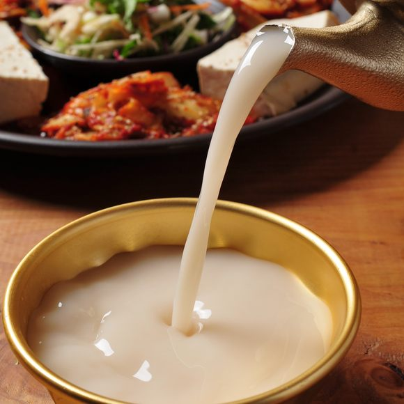

Makgeolli

Description
Makgeolli is a traditional Korean rice wine, slightly sweet and milky, with a low alcohol content.
It is made from a mixture of fermented rice, water, and a fermentation starter called nuruk. Makgeolli is known for its refreshing taste and slight effervescence, making it a popular beverage in Korea.
Ingredients
- Short-grain rice
- Nuruk (Korean fermentation starter)
- Water
- Yeast (optional)
- Sugar (optional)
Steps to Make Makgeolli
- Prepare the Rice:
- Rinse the rice thoroughly until the water runs clear.
- Soak the rice in water for at least 3 hours, or overnight.
- Drain the rice and steam it until fully cooked.
- Let the rice cool to room temperature.
- Make the Starter Mixture:
- In a large bowl, combine the cooled rice and nuruk.
- Add water to the mixture, using approximately equal parts rice and water.
- If using yeast, dissolve it in a small amount of water and add to the mixture.
- Ferment the Mixture:
- Transfer the mixture to a clean fermentation jar or container.
- Cover the jar with a clean cloth or lid, allowing some airflow.
- Leave the jar at room temperature for 5-7 days, stirring daily.
- The mixture will become bubbly and frothy as it ferments.
- Strain and Bottle the Makgeolli:
- After fermentation, strain the mixture through a fine mesh strainer or cheesecloth to separate the liquid from the solids.
- Bottle the strained liquid, leaving some space at the top for carbonation.
- If desired, add sugar to taste before bottling.
- Store and Serve:
- Store the bottled makgeolli in the refrigerator.
- Shake well before serving, as the rice sediment will settle at the bottom.